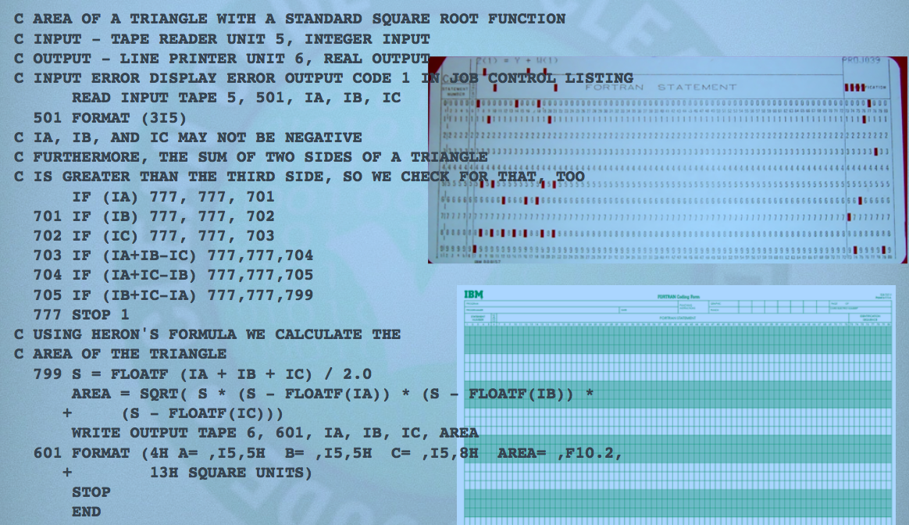
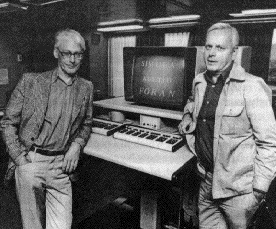
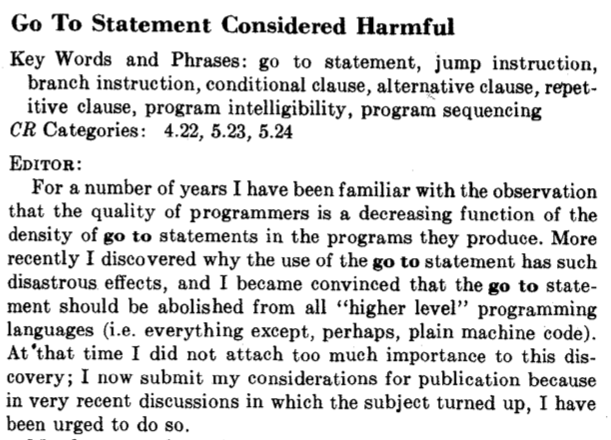

Funktionale Programmierung: Ergänzungen
Johannes Brauer
Created: 2017-08-14 Mon 22:38
Datenabstraktion
These:
Es gibt keinen Wesensunterschied zwischen Programmen und Daten
vgl. auch Kapitel Algebraische Datentypen
1. Beispiel: Rechnen mit Punkten in der Ebene
Defintion von Punkten
- Ein Punkt in der Ebene wird durch seine x- und seine y-Koordinate bestimmt (kartesisches Koordinatensystem).
Wir tun so, als ob wir eine Funktion
make-pointzur Verfügung hätten, die einen Punkt erzeugt, z. B. so:(make-point 3 4)
Nehmen wir weiter an, es gäbe zwei Funktionen, die die x- bzw. die y-Koordinate eines Punkts zugänglich machen:
(point-x (make-point 3 4)) ;;=> 3 (point-y (make-point 3 4)) ;;=> 4
Point-Funktionen
Unter diesen Voraussetzungen könnten z. B. folgende Funktionen, die
pointsverarbeiten, definiert werden:(def add-point (fn [p1 p2] (make-point (+ (point-x p1) (point-x p2)) (+ (point-y p1) (point-y p2))))) (def distance-to-0 (fn [p] (Math/sqrt (+ (Math/pow (point-x p) 2) (Math/pow (point-y p) 2)))))
- Diese (und weitere) Funktionen können programmiert werden, ohne
- die Implementierung der Funktionen
make-point,point-xundpoint-yzu kennen - eine konkrete Repräsentation von Punkten angegeben zu haben.
- die Implementierung der Funktionen
- Frage: „Wo sind hier die Daten?”
Mögliche Implementierungen von points
;; als Datenstruktur mit defrecord (defrecord point [x y]) (def make-point ->point) (def point-x :x) (def point-y :y) ;; durch Vektoren: (def make-point (fn [x y] [x y])) (def point-x (fn [p] (get p 0))) (def point-y (fn [p] (get p 1)))
Anforderungen an die Implementierung
- Jede Implementierung, die den folgenden beiden Gleichungen genügt,
ist hinreichend:
(point-x (make-point x y)) = x
(point-y (make-point x y)) = y - Daten werden durch Konstruktions- und Selektionsfunktionen repräsentiert.
- Die oben gezeigten Implementierungen benutzen „immerhin“ in der Sprache eingebaute Datenstrukturen (Records bzw. Listen).
- Im zweiten Beispiel kommen wir ganz ohne solche Datenstrukturen aus.
- Dort wird gezeigt, dass nicht nur „höher wertige“ Datenstrukturen sondern auch elementare Daten durch Funktionen dargestellt werden können.
2. Beispiel: Listen
- Lisp-Sprachen stellen üblicherweise
- eine Funktion zum Erzeugen einer Liste (
cons) sowie - zwei Funktionen zum Zugriff auf die beiden Komponenten einer
Liste bereit:
first- liefert – angewendet auf eine nicht leere Liste – das erste Element.
rest- liefert – angewendet auf eine nicht leere Liste – die Restliste.
- eine Funktion zum Erzeugen einer Liste (
- Der Zusammenhang zwischen
cons,firstundrestkann durch die folgenden Gleichungen beschrieben werden:
(first (cons elem liste)) = elem
(rest (cons elem liste)) = liste
(vgl. auch Symbolische Ausdrücke)
Implementierung von Listen durch Funktionen
(ns dataasproc) (use 'clojure.test) (def cons (fn [x y] (let [dispatch (fn [m] (cond (= m 0) x (= m 1) y :else (throw (Exception. "Argument not 0 or 1 -- CONS"))))] dispatch))) (def first (fn [z] (z 0))) (def rest (fn [z] (z 1))) (def empty? (fn [z] (= z ())))
Erläuterungen
- Die Benutzung der Funktionen hat nichts mehr mit einem intuitiven Verständnis von Daten zu tun.
- Es muss nur gezeigt werden, dass die Implementierung die oben
genannten Gleichungen erfüllt:
- Ein Ausdruck
(cons x y)liefert die lokal definierte Funktiondispatchals Resultat, die ein Argument akzeptiert und entwederxoderyzurückgibt je nachdem, ob das Argument 0 oder 1 ist. - Entsprechend ist der Ausdruck
(first z)so definert, dass er die Funktionzauf 0 anwendet. D. h. wennzeine durch(cons x y)erzeugte Funktion ist, dann liefert die Anwendung vonzauf 0x. Damit ist gezeigt, dass gilt:
(first (cons x y)) = x - Eine ähnliche Argumentation kann für den Zusammenhang zwischen
consundrestgeführt werden.
- Ein Ausdruck
Benutzung
Die Funktionen können wie die Clojure-Standardfunktionen benutzt werden:
;; Benutzung der neuen Implementierung von Listen: (def sum (fn [lon] (cond (empty? lon) 0 :else (+ (first lon) (sum (rest lon)))))) (deftest test-sum (is (= 0 (sum ()))) (is (= 12 (sum (cons 7 (cons 3 (cons 2 ())))))))
Alternative Implementierung von Listen durch Funktionen
siehe Aufgabe 1
3. Beispiel: „Church-Numerals"
- Bereits im Kapitel Natürliche Rekursion haben wir eine Rekursive Definition der natürlichen Zahlen kennen gelernt, die auf den Peano-Axiomen basiert und zwei-elementige Listen zur Repräsentation von natürlichen Zahlen benutzt.
- Alonzo Church, ein berühmter Logiker und Erfinder des λ-Kalküls, hat gezeigt, dass man die positiven ganzen Zahlen auch durch Funktionen repräsentieren kann.
- Für „Hartgesottene” findet sich in moodle im Themenblock Beispiele ein Clojure-Projekt zu den Church numerals.
Verzögerte Auswertung
Einführung
Wo und warum gibt es hier verzögerte Auswertung?
if (obj != null && obj.isWhatiz()) { ... }
Kennen Sie weitere Beispiele für verzögerte Auswertung?
- Ein wesentliches Merkmal einer Programmiersprache ist der Zeitpunkt der Auswertung der Teilausdrücke eines Ausdrucks.
- Zum Beispiel: In Clojure (und allen Lisp-Sprachen und vielen aber
nicht allen Programmiersprachen)
- wird eine Funktionsanwendung der Form
(e1 e2 ... en)so ausgewertet, dass die Argumentee2bisenausgewertet werden, bevor die Funktione1angewendet wird und - der Rumpf einer Funktion
(fn [...] ...)wird nicht ausgewertet bevor die Funktion aufgerufen wird.
- wird eine Funktionsanwendung der Form
Warum kann die Funktion
(def my-if-bad (fn [x y z] (if x y z)))
nicht anstelle der Standardfunktion
ifbenutzt werden?
Was würde bei einem Aufruf der Funktion
(def factorial-wrong (fn [x] (my-if-bad (= x 0) 1 (* x (factorial-wrong (- x 1))))))
passieren?
Unter Ausnutzung der Tatsache, dass der Rumpf einer Funktion nicht ausgewertet wird, bevor die Funktion aufgerufen wird kann man eine funktionierende Variante einer eigenen „if-Funktion” schreiben:
(def my-if (fn [x y z] (if x (y) (z))))
Warum müsste sie dann aber so benutzt werden?:
(my-if e1 (fn [] e2) (fn [] e3))
Die
factorial-Funktion könnte dann so aussehen:(def factorial (fn [x] (my-if (= x 0) (fn [] 1) (fn [] (* x (factorial (- x 1)))))))
- Es gibt keinen triftigen Grund, eine derartige
my-if-Funktion zu schreiben. - Parameterlose Funktion für die verzögerte Auswertung zu benutzen, ist aber ein mächtiges Konzept.
- In der englisch-sprachigen Fachliteratur werden solche parameterlosen Funktionen als thunks bezeichnet.
- Niemand weiß, warum die thunks thunks heißen.
- In Lisp-Sprachen besteht die Möglichkeit, Makros anstelle von Funktionen zu benutzen. Argumente eines Macro-Aufrufs werden nicht ausgewertet.
Benutzung von Delay und Force
- Annahme:
- Das Resultat irgendeiner aufwändigen Berechnung \(b\) wird als Argument einer anderen Funktion benötigt. Abhängig von anderen Argumenten wird das Resultat keinmal, einmal oder n-mal benötigt.
- Problem:
- Wenn das Argument für \(b\) „gethunkt“ wird, muss das Ergebnis möglicherweise n-mal berechnet werden. Wird es nicht „gethunkt“ findet die Berechnung auch dann statt, wenn sie vielleicht gar nicht benötigt wird.
- Lösung:
- Benutzung einer Technik, die als verzögerte Auswertung (engl. lazy evaluation), call by need oder auch promises bezeichnet wird. Für den Fall, dass die Auswertung (von \(b\)) tatsächlich benötigt wird, geschieht dies aber nur genau einmal. Der berechnete Wert wird (durch Benutzung von Mutation) zwischengespeichert.
Implementierung von Delay und Force in Clojure
(def my-delay (fn [f] (atom [false f]))) (def my-force (fn [th] (if (@th 0) (@th 1) (do (swap! th assoc 0 true 1 ((@th 1))) (@th 1)))))
Erläuterungen
- Der Funktion
my-delaywird ein thunkfübergeben und als zweites Element eines Vektors einer mutierbaren Struktur (atom) abgelegt. - Das erste Element des Vektors bekommt den Wert
false, der kennzeichnet, dass dasfbisher nicht ausgewertet wurde. - Die Funktion
my-forcewird ein (mitmy-delay„verpackter“) thunk übergeben. Sie prüft, ob das erste Element des Vektors@thtrueist:- falls ja
- Der Wert des zweiten Elements des Vektors
@thwird zurückgegeben. - falls nein
- Der Wert des ersten Elements des Vektors
@thwird auftruegeändert und das zweite Element durch den ausgewerteten thunk ersetzt. Anschließend wird dieser Wert zurückgegeben.
- Warnung: Die Benutzung eines Atoms und von Mutation ist durchaus fehleranfällig, wenn die Auswertung des thunks Nebeneffekte erzeugt oder von änderbaren Daten abhängt.
Anwendung von my-delay und my-force
Als Beispiel für eine Funktion, die die Auswertung eines ihrer Argumente nur unter bestimmten Bedingungen benötigt, betrachten wir die folgende – zugegeben: etwas alberne – Multiplikationsfunktion für positive Zahlen. Hier zunächst die Variante ohne verzögerte Auswertung:
(def my-mult (fn [x y] (cond (= x 0) 0 (= x 1) y :else (+ y (my-mult (- x 1) y)))))
Bei dieser Variante würde bei einem Aufruf
(my-mult 0 (factorial 100))
die Fakultät unnötigerweise berechnet.
Variante von my-mult mit y als thunk
(def my-mult (fn [x y-thunk] (cond (= x 0) 0 (= x 1) (y-thunk) :else (+ (y-thunk) (my-mult (- x 1) y-thunk)))))
Jetzt würde der obige Aufruf so aussehen:
(my-mult 200 (fn [] (factorial 100M)))
Jetzt würde die Fakultät für x = 0 nicht, für x = 1 einmal, für
x = n jedoch n-mal ausgewertet. Dies kann durch die Verwendung von
my-delay und my-force vermieden werden.
(my-mult n (let [x (my-delay (fn [] (factorial 100M)))] (fn [] (my-force x))))
Erläuterungen:
- Es wird einmalig – vor dem Aufruf von
my-mult– eine verzögerte Berechnung erzeugt. - Wenn der thunk, der als zweites Argument übergeben wird, aufgerufen wird, wird die Fakultät genau einmal berechnet und zwischengespeichert.
Weitere Variante von my-mult
Die folgende Version von my-mult erwartet anstelle eines beliebigen
thunks ein Resultat von my-delay als zweites Argument. Damit wird
der Aufruf etwas komfortabler:
(def my-mult (fn [x y-promise] (cond (= x 0) 0 (= x 1) (my-force y-promise) :else (+ (my-force y-promise) (my-mult (- x 1) y-promise))))) (my-mult n (my-delay (fn [] (factorial 100M))))
Funktionale versus objektorientierte Programmierung
Ein wenig Historie

1936


- Begriffe: Unterprogramm, Makro, code is data
1945
- Turing schreibt Code.
- in Binärform
- benutzt Integer-Zahlen (add) und boolesche Operationen
- erfindet Unterprogramme einschl. Stack
- erfindet Gleitkommazahlen
- Anzahl der Computer weltweit: \(O(1)\).
- Anzahl der Programmierer weltweit: \(O(1)\).
1953 Fortran


Funktionale Programmierung
1960
- Anzahl der Computer weltweit: \(O(1E2)\).
- Anzahl der Programmierer weltweit: \(O(1E3)\).
1965
- Anzahl der Computer weltweit: \(O(1E4)\).
- Anzahl der Programmierer weltweit: \(O(1E5)\).
1966 Simula 1967
Ole-Johan Dahl, Kristen Nygard:

Objektorientierte Programmierung
1968
Edsger Dijkstra:


Strukturierte Programmierung
Drei Paradigmen
- 1968 – Strukturierte Programmierung. Edsger Dijkstra zeigt, wie der
Gebrauch von
GOTO-Anweisungen durchif/then/elseundwhileersetzt werden kann. - 1966 – Objektorientierte Programmierung. Ole-Johan Dahl und Kristen
Nygaard entwickeln die erste OO-Sprache: Simula-67. Durch die
Einführung der Polymorphie konnten die
function pointerseliminiert werden. - 1957 – Funktionale Programmierung. John McCarthy erfindet Lisp. Lisp basiert auf dem Lambda-Kalkül, entwickelt von Alonzo Church in den 1930ern. Ein wesentliches Merkmal: Es gibt keine Zuweisung.
Drei Paradigmen, drei Einschränkungen
1970
- Anzahl der Computer weltweit: \(O(1E5)\).
- Anzahl der Programmierer weltweit: \(O(1E6)\).
Was bringt die funktionale Programmierung?
- Worin besteht der Kerngedanke der funktionalen Programmierung?
Fehlen der Mutation
- Wie kann das „Fehlen von Etwas” ein wichtiges Feature eines Programmierparadigmas sein?
- Das Fehlen von Zuweisungen ermöglicht das Schreiben von Programmcode ohne befürchten zu müssen, das anderer Code den eigenen negativ beeinflusst.
- Nicht änderbare Datenstrukturen sind das wichtigste „non-feature“, das eine Programmiersprache haben kann.
- Auf einen wichtigen Vorteil soll hier besonders eingegangen werden: Sharing und Aliasing werden irrelevant.
Beispiel: Sortieren eines Vektors
(def sort-pair (fn [pair] (if (< (pair 0) (pair 1)) pair [(pair 1) (pair 0)])))
- Die Funktion liefert im
else-Fall einen neu erzeugten Vektor. - Aber was passiert im
then-Fall?- Erhalten wir eine Kopie des an die Funktion übergebenen Vektors oder
- gibt die Funktion ein Alias auf denselben Vektor zurück?
- Bei Fehlen von Mutation ist die Frage irrelevant.
Beispiel: Funktion append
(def append (fn [xs ys] (cond (empty? xs) ys :else (cons (first xs) (append (rest xs) ys)))))
- Frage: Teilt die zurückgegebene Liste irgendwelche Elemente mit den Argumentlisten?
- Antwort 1: Es spielt keine Rolle, solange kein Aufrufer das feststellen kann.
- Antwort 2: Ja, die neue Liste „wiederverwendet” alle Elemente von
ys. Das spart Speicherplatz und Rechenzeit. - Ein Problem entstünde nur dann, wenn nachträglich die Liste
ysverändert werden könnte. - Unveränderliche Daten erleichtern das Schreiben eleganter Algorithmen erheblich.
- Auch die Funktion
restteilt „dankenswerterweise” ihr Ergebnis mit ihrer Argumentliste (bis auf das erste Element). - In der objektorientierten Programmierung, wo intensiv von Verweissemantik und Mutation Gebrauch gemacht wird, muss die Programmiererin sich mit den Fragen beschäftigen, ob Verweise auf alte Objekte genutzt oder neue Objekte erzeugt werden.
Beispiel: Ein Java-Programm
Ein inzwischen behobenes Sicherheitsproblem in einer Java library:
class ProtectedResource { private Resource theResource = ...; private String[] allowedUsers = ...; public String[] getAllowedUsers() { return allowedUsers; } public String currentUser() { ... } public void useTheResource() { for(int i=0; i < allowedUsers.length; i++) { if(currentUser().equals(allowedUsers[i])) { ... // access allowed: use it return; } } throw new IllegalAccessException(); } }
- Problem:
getAllowedUsersgibt einen Verweis auf das ArrayallowedUserszurück. - Damit ist
getAllowedUsers()[0] = currentUser()möglich. - Abhilfe?
Integration von Daten und Funktionen – Übergang zum Objektbegriff
Funktionen mit Funktionen als Resultat
Beispiele aus dem letzten Semester:
Was liefert der Ausdruck
(inc 3), wenn die Funktionincwie folgt definiert ist?(def inc (fn [n] (fn [z] (+ z n))))
Welches Resultat liefert eine Anwendung der Funktion
dot?(def dot (fn [f g] (fn [x] (f (g x)))))
Was ist ein Objekt?
- Objekte im Sinne der „objektorientierten Programmierung” sind nichts weiter als Funktionen mit „internen” Daten.
So gesehen liefert ein Ausdruck der Art
(def inc-obj (inc 3))
ein Objekt (eine Funktion) mit dem internen Datum (Zustand) 3.
- Die Funktion bezeichnet man in der objektorientierten Programmierung auch als Methode.
- Durch den Ausdruck
(inc-obj 7)wird die Methode aktiviert (die Funktion aufgerufen). Sie verlangt ein Argument. inc-objist ein sehr primitives Objekt mit nur einer (unveränderlichen) Zustandsgrößen und einer Methode.
Ein etwas interessanteres Objekt
(def person (fn [name vorname] (let [get-name (fn [] name) get-vorname (fn []vorname) vollname (fn [] (str vorname " " name)) gruss (fn [g] (str g " " (vollname)))] (fn [nachricht] (cond (= nachricht 'get-name) get-name (= nachricht 'get-vorname) get-vorname (= nachricht 'get-vollname) vollname (= nachricht 'gruss) gruss :else (throw (Exception. "unbekannte Nachricht")))))))
- Ein Aufruf der Funktion
personliefert ein „Objekt” mit- zwei Zustandsgrößen (
name,vorname) und - vier Methoden:
get-name,get-vorname,vollnameundgruss
- zwei Zustandsgrößen (
- „In Wirklichkeit” liefert ein Aufruf der Funktion
personeine Verteilfunktion, die anhand ihres Parametersnachrichtermittelt, welche der Methoden aufzurufen ist.
Anwendungen des person-Objekts
;; Objekterzeugung: (define p1 (person "Gans" "Gustav")) ((p1 'get-vorname)) ;;=> "Gustav" ((p1 'get-name)) ;;=> "Gans" ((p1 'get-vollname)) ;;=> "Gustav Gans" ((p1 'gruss) "hallo") ;;=> "hallo Gustav Gans" (p1 'x) ;; error
Java-Klasse Person
public class Person { String vorname, name; public Person (String n, String v) { vorname = v; name = n; } public String get_name() { return name; } public String get_vorname() { return vorname; } public String vollname() { return vorname + " " + name; } public String gruss(String gruss) { return gruss + " " + this.vollname(); } }
Zusammenfassung
- Für die objektorientierte Programmierung bedarf es keiner speziellen Programmiersprachen.
- Objektorientierung besteht nur aus einer Reihe von Konventionen zum Umgang mit Daten.
- Diese Konventionen werden von objektorientierten Sprachen explizit und implizit unterstützt. Z. B. muss die Verteilfunktion nicht selbst programmiert werden.
- Objekte sind nichts weiter als
- eine Menge von
Name->Wert-Abbildungen - eine Reihe von Funktionen, die solche Abbildungen als erstes Argument akzeptieren und
- eine Verteilfunktion, die ermittelt, welche dieser Funtkion aufzurufen ist.
- eine Menge von